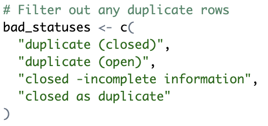
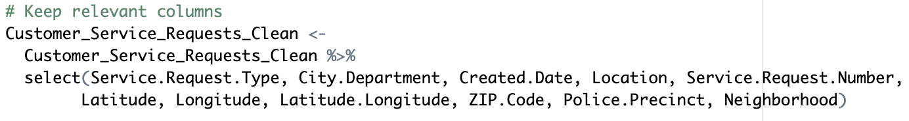
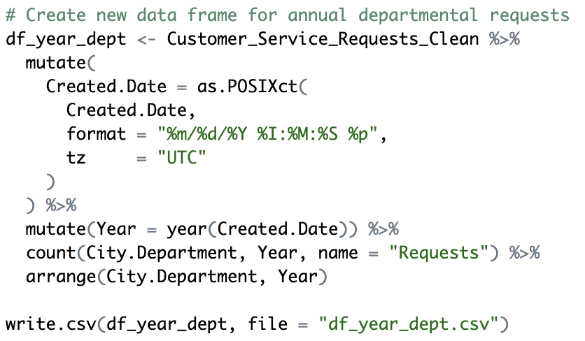
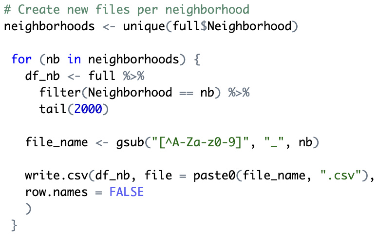

Introduction
For the 6th annual DubsTech Datathon, our team tackled the "Government: Analyzing Seattle Resident's Customer Requests" prompt. This report demonstrates our comprehensive data analysis process while showcasing an advanced collection of interactive data visualizations.
Which department has the most service requests?
To answer this question, we integrated a 3D line plot into our website using Plotly.js. By extracting customer service request data on a per-year and department basis, we effectively illustrate the distribution of requests across departments over a four-year period. This visualization allows stakeholders to identify trends in service demand across different city departments and observe how these patterns have evolved over time.
Total requests by different service types. What trends do we notice for each service type? Has any particular service type grown over time?
To address this question, we created an interactive and animated bar graph using Tableau. This dynamic visualization enables stakeholders to observe customer requests over time with adjustable date viewing options. The animation provides a compelling real-time representation of how service demands have fluctuated, making it easy to identify emerging patterns and growing service categories.
Which areas with the highest service requests?
For this analysis, we leveraged public map data from Leaflet.js to visualize service request volumes across Seattle's neighborhoods. By implementing an overlapping heatmap, we created an intuitive visualization that clearly highlights the areas of Seattle generating the most service requests. This approach reveals concentrated hotspots of resident needs, allowing city officials to better allocate resources to high-demand areas.
Department Service Requests by Year
This 3D line plot illustrates the volume of customer service requests handled by each Seattle city department annually from 2021 to early 2025. Each department is represented by a distinct colored line, allowing for clear comparison of service demand patterns over time. The x-axis displays the different city departments, while the y-axis shows the progression of years. The z-axis represents the total number of customer service requests received during each time period, with higher values indicating greater service demand. This interactive visualization enables stakeholders to identify trends, compare departmental workloads, and analyze how service request volumes have evolved across different departments during this four-year period. Clicking on a department in the key will toggle the visibility of that department's line.
Analysis
The 3D line plot charts each department’s annual service‐request volume from 2021 through early 2025 as rising colored ribbons, and reveals both scale and growth dynamics at a glance. In 2022, the Department of Transportation ribbon spikes noticeably—reflecting a wave of pandemic‐era infrastructure investments and street‐repair programs that generated a surge in potholes, signage, and traffic‐signal complaints. By 2024, the Seattle Police Department ribbon soars highest of all—driven by heightened public attention to neighborhood safety following high-profile incidents. In contrast, Seattle Public Utilities and smaller departments like Parks & Recreation and Solid Waste display steadier, more modest climbs, indicating that their service demands remained relatively stable and predictable throughout the period. The 3D perspective makes it easy to spot crossover points, illuminating not just raw totals but how departmental requests shift year by year.
Service Request Distribution
This visualization shows total number of customer service requests submitted to the City of Seattle, categorized by service type, from January 2021 through early April 2025, with rankings for each month. Each service type is represented by unique trend bar, allowing easy comparison over time. On the y-axis are rankings of the most requested service during the selected month with rank #1 being the most requested service. The x-axis shows a running sum of the total number of requests sent overall. This visualization is used to inform trends for each service type. Drag the month slider left or right to jump to any specific point in time, or hit the play button to animate the histogram race automatically through each month.

Analysis
Geographical Distribution
This interactive map displays the 2000 most recent customer service requests per neighborhood submitted to the City of Seattle, plotted at its geographic coordinates and aggregated into a color‐coded density layer. Areas with more requests glow hotter, making it easy to see which neighborhoods generate the most demand. The default selection is for all neighborhoods, but a filter lets you isolate and compare request patterns for any selected area. Hover tooltips reveal exact request information, including request type, department, date created, location, neighborhood, zip code, and police precinct. Pan/zoom controls allow detailed exploration at any scale. Together, these features help pinpoint where city services are most needed. Clicking on a marker will display the details of the service request.
Analysis
The geographical heat map aligns closely with Seattle’s population‐density pattern: the brightest hotspots—Downtown/Central Business District, Capitol Hill, University District and Belltown—are also the city’s densest neighborhoods. In these areas, high foot traffic and resident counts naturally drive up service‐request volume. South Lake Union and Fremont, though slightly less residential, also glow intensely—indicating that rapid commercial development and construction further amplify demand beyond what population alone would predict. In contrast, low‐density outlying neighborhoods like Broadview, North Beach/Blue Ridge and Fauntleroy show sparse requests, mirroring their smaller resident bases. Overall, this comparison shows that while raw population density is the primary driver of request volume, non-residential activity creates noteworthy deviations
Our Process
We began by cleaning the original dataset in R Studio, removing duplicates and incomplete service requests to ensure data quality. For visualization, we built this interactive webpage using HTML, CSS, and JavaScript. Tableau was used to create dynamic dashboards, while Leaflet enabled us to map service requests geographically across Seattle. Additionally, we leveraged Plotly to develop 3D visualizations, highlighting trends by department and council district.
Cleaning the Data
We filtered out any rows flagged as duplicates, overwrote the cleaned data frame, and ran glimpse() to confirm the duplicate rows were gone.
Selecting Relevant Features
We streamlined the data by subsetting the cleaned frame to include only the essential fields—Service Request Type, City Department, Date Created, Location, Service Request Number, Latitude, Longitude, ZIP Code, Police Precinct, and Neighborhood—overwrote the existing object, then ran glimpse() to confirm that only those columns remain.
Creating New Features
We split the original Date Created character string into two new columns—Date (as a Date object) and Time (as a time or POSIXct)—to easily aggregate and plot by day, hour, etc. We overwrote the data frame and ran glimpse() to check these new fields, which will ensure our Tableau histogram‐race animation can smoothly step through each time bucket.
Creating New Files
We created a new file for each distinct neighborhood, taking the 2,000 most recent requests, creating a separate data frame, and writing it out as a CSV (e.g. Capitol_Hill.csv). These per-neighborhood CSVs simplified building the Geographical Distribution of Service Requests heat map.
Aggregating Annual Departmental Requests
We parsed each request’s timestamp into a proper date‐time object and used lubridate to pull out the calendar year. We grouped the cleaned dataset by City Department and Year, and tallied the number of requests in each group with dplyr’s count() function. This produced a tidy summary table—one row per department‐year with its total requests—which we then fed into our 3D line plot, allowing us to trace each department’s workload trajectory over time in three dimensions.

Tools Utilized


Meet the Team

Melaya La Madrid
Informatics Undergraduate @ UW
Focused on data wrangling, analysis, and visualization